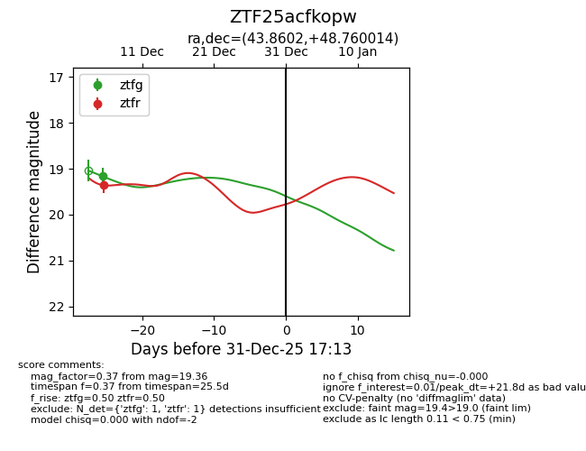
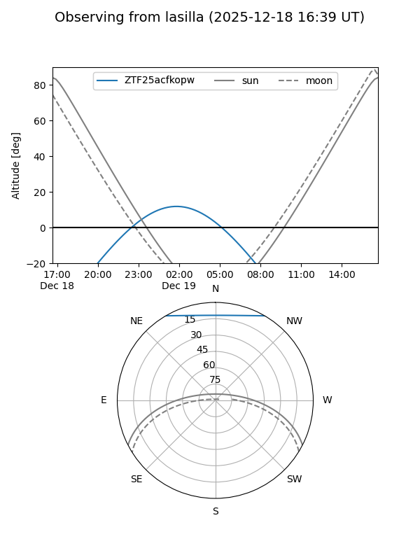
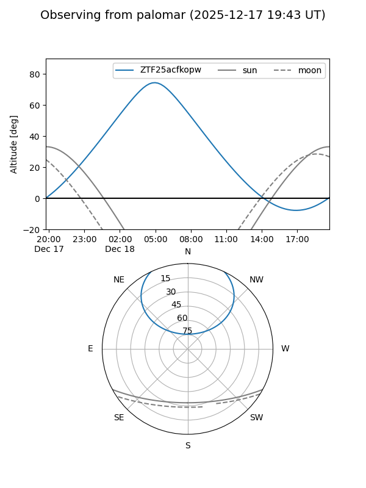

ZTF25acfkopw
Target ZTF25acfkopw at 2025-12-18 11:17
Aliases and brokers:
FINK: fink-portal.org/ZTF25acfkopw
Lasair: lasair-ztf.lsst.ac.uk/objects/ZTF25acfkopw
ALeRCE: alerce.online/object/ZTF25acfkopw
alt names
ZTF25acfkopw (ztf,fink_ztf)
Coordinates:
equatorial (ra, dec) = 43.8602,+48.76001
equatorial (HMS+DMS) = 02:55:26.46,+48:45:36.05
galactic (l, b) = (143.0502,-9.20752)
Photometry
last ztfg=19.17, ztfr=19.36
1 ztfg, 1 ztfr detections
Lightcurve

Visibility


Additional plots